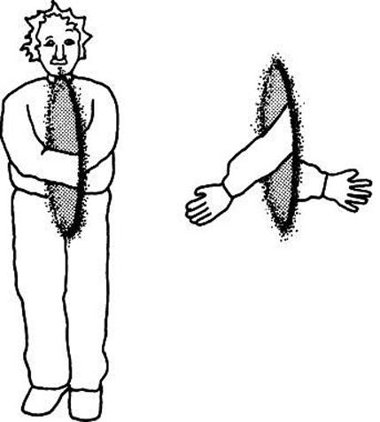

_
□
×

MATER.INDEX
Nivel Vidrio
NIVEL VIDRIO

| Tipo | Animación |
| Dimensiones | 1 |
| Soporte | Borde de vidrio |
Nivel Vidrio es un medio de animación en una dimensión donde la imagen en movimiento se observa sobre los bordes de los vidrios.
ENLACES · PROFUNDIDAD −3
Categorías: Animación · Medios · Niveles −2 a −4